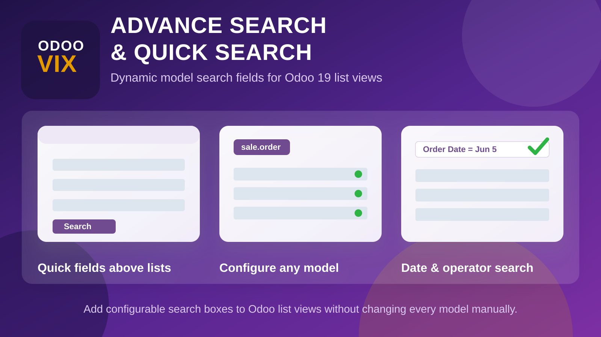
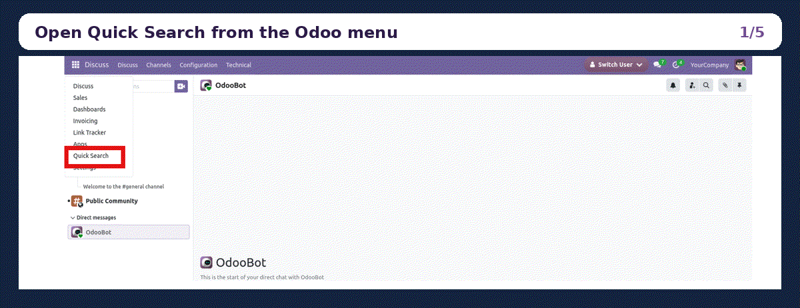
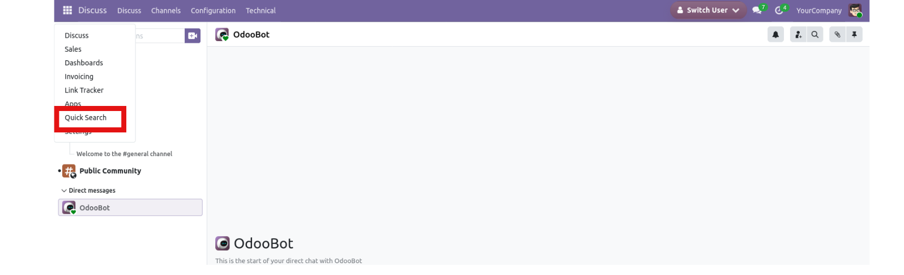
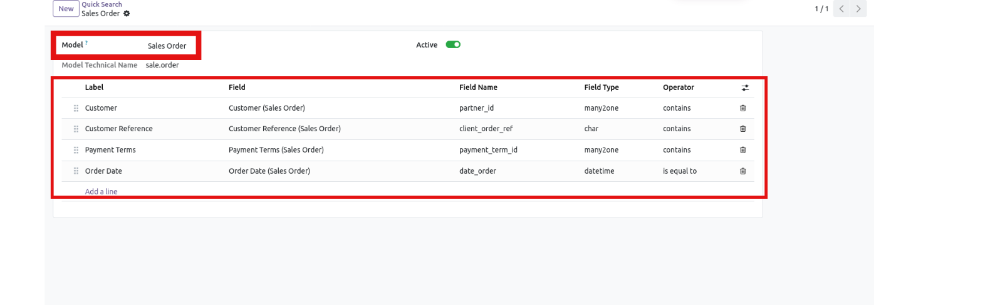
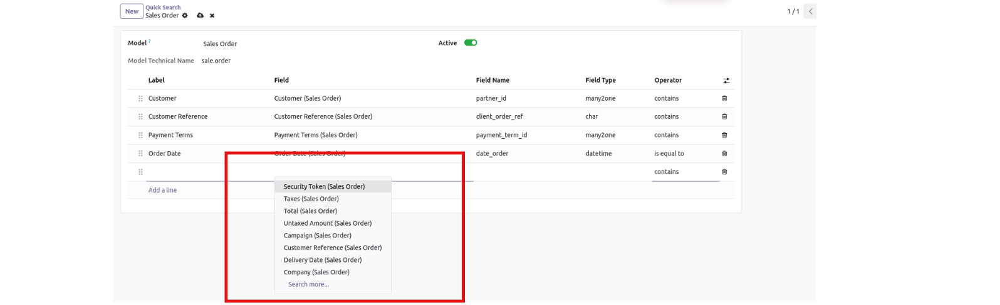
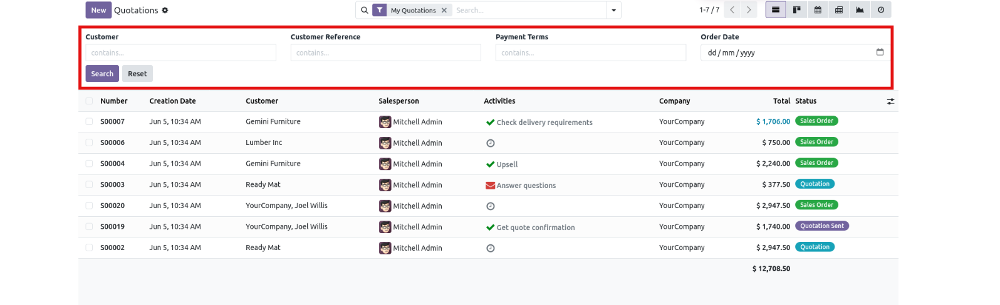
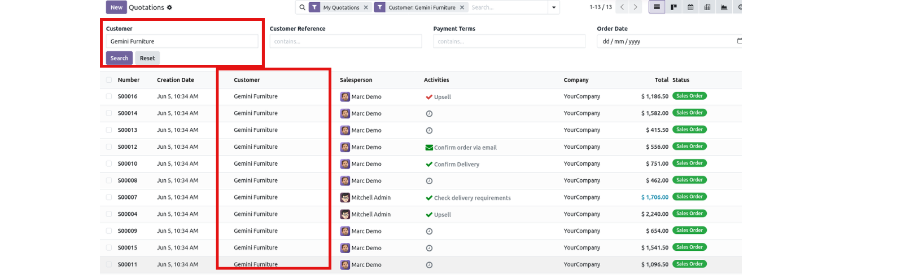

Configure searchable fields for any Odoo model and show a clean quick search panel directly above list views. Users can search text, relational fields, numbers, and dates without opening complex filter menus.

Give business users fast, model-specific search inputs while keeping setup simple for administrators. Configure the fields once and use them directly from list views.
Select any Odoo model, such as Sales Order, Contacts, Products, or custom models, then define the fields users should search.
Show configured fields above tree/list views so users can search records immediately without editing XML views one by one.
Use contains, equals, not equals, starts with, ends with, greater than, less than, and between operators based on the selected field.
Date inputs search full-day ranges for datetime fields, helping users find records even when the stored value includes a time.
Open Quick Search, choose the target model, add field lines with labels and operators, then open that model's list view. The configured search boxes appear above the records with Search and Reset actions.
Review the main setup and search flow from menu access to model configuration and live list-view filtering.






Follow these steps to configure quick advanced search for any model in your Odoo database.
Install Advance Search & Quick Search from Apps.
Use the Quick Search menu and create a configuration record.
Choose the Odoo model, add field lines, labels, and operators.
Open the model's tree/list view and use the generated quick search panel.
Yes. Any available Odoo model can be selected and configured.
No. The quick advanced search panel is designed for tree/list views only.
Yes. Date inputs are converted to a full-day datetime range for matching records.
Administrators and configured quick search managers can create and update search settings.